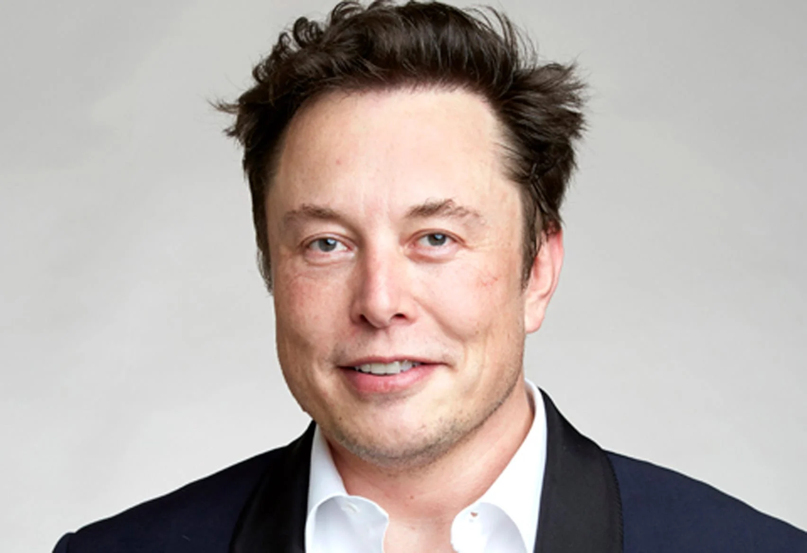

Elon Musk Tribute Page

Real Life Tony Stark
There are many words we could use for Elon Reeve Musk. Some of these may include 'genius', 'eccentric' or even a 'loose cannon'
1971 June 28: Born
1988: Moved to Canada - 17 years old
1995: Moved to California - 24 years old
1995: Attended Stanford University - 24 years old
1995 November 6: Founded Zip2

1999 February: Compaq acquires Zip2 for $305 million - 27 years old
1999 March: Founded X.com
2000 March: X.com merges with Confinity, forming Paypal.com
2002 July 5: E bay acquires Paypal, Musk gets $165 million
2010 January 30: Elon Musk's Tesla files for IPO
2010 December 8: SpaceX Falcon 9 Launches
2015: Co-Founded OpenAI - 44 years old
2016 July: Founded Neuralink - 45 years old
2020: Elon Musk's net worth at $27 billion fluctuating to $150 billion throughout the year